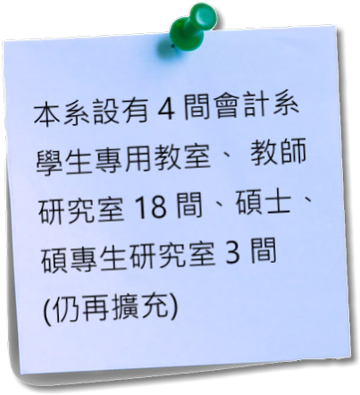
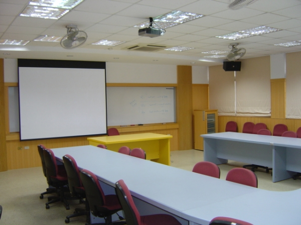
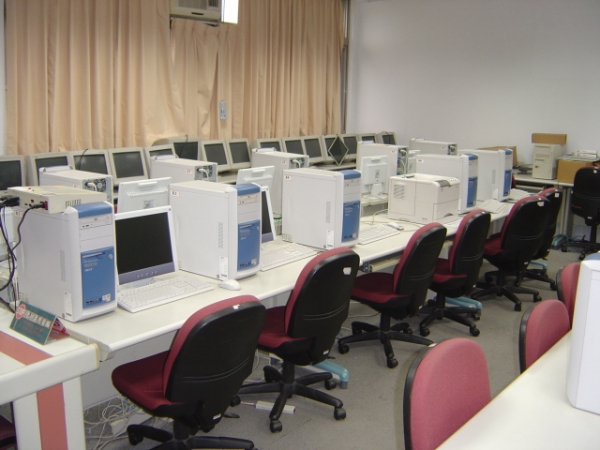
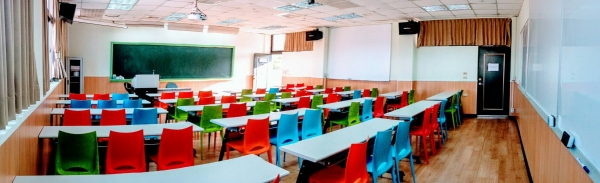
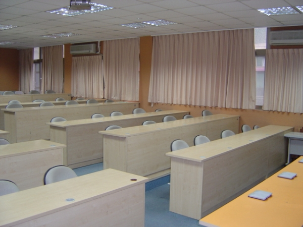

理念:
教學方面
理論與實務並重，強化學生數量及外語能力，整合會計、財務、稅法，及電腦運用等四學程。教學方式著重啟發，引導，並訓練學生獨立思考及分析的能力，培養國際宏觀及會計倫理的專業道德觀念。 研究方面
致力於會計及相關領域之研究，融合探討學理及實務案例，亦致力於啟發式教學之研究及增強學生學習績效之研究，以期研究成果能切合時代潮流，配合國家社會之需要，輔助教學，增強學生學習績效。 服務社會
針對國家社會之所需，配合時潮，提供適當的訓練，及進修課程供社會及產業人士修習，以落實終生學習之理念。
目標:
一、培育人格與學養兼備，個人與群體平衡發展的會計專業人才。
二、兼顧專業與通識教育的傳授，使學習內涵兼具創新與創意。
三、培養重視職業道德且具備負責嚴謹工作態度的學生。
四、深化會計專長，並強化資訊管理與稅務規劃能力，培養跨領域的高階會計專業人才。
五、強調理論與實務兼顧的教學方式，培養具有終身學習能力的人才，期使人才學以致用。
|
||||||||||
|
||||||||||
|
||||||||||
| 研究室 | 管理316 | 電話 | 03-265-5316 | |||||||
| 研究領域 | ●財務會計 |
|||||||||
| 授課課程 | ●稅務法規 ●財產及土地稅法 ●財務會計理論 ●全球化職涯規劃及發展等系列職涯課程 |
|||||||||
| 學歷 | ●台灣大學會計博士 |
|||||||||
中原會計系與四大會計師事務所往來密切，每學年度皆會舉辦事務所參訪活動， 讓學生提早了解未來工作環境； 四大事務所會於暑假提供事務所工讀機會，並於每學 年度上學期至本系舉辦校園徵才活動， 提供大四學生畢業之就業機會，本系之優秀學生於大四上學期即有機會錄取， 相較於他系學生畢業後仍需擔心出路是為一大優勢。 會計系出路進可攻退可守，為最適生存的不朽行業， 只要是與「商業行為」有關的活動，都非得會計專業人員的參與不可。 而另一個眾所皆知的會計人優勢是：會計專才要轉入其他與企業相關之管理、行銷、理財、證券投資等工作領域並不困難， 但其他領域人員則較難取代會計專才。 因此，要說『會計』是商業社會中最適生存 的行業一點也不誇張。 會計人的出路，一年四季暢通無阻。
Q1:會計系薪水大約多少？
從人力銀行統計資料顯示上述會計相關人員會計系出路薪水上班族平均落在28K~58K， 社會新鮮人會計系出路薪水落在29K~38K， 大學會計系出路與碩士會計系出路畢業薪水是有差異性， 大學畢業社會新鮮人會計系出路薪水平均約29K~33K、 研究所碩士畢業社會新鮮人會計系出路薪水平均約34K~38K， 因此可以了解到讀了研究所在於社會新鮮人起薪部分，學歷上是有加值效果， 為此中原專門開了『4+1』， 準備給中原直升本系碩士的學生， 讓他們可以花更少的時間就拿到加薪的文憑。
不過這只是和中原直升的同學喔~~~~~
Q2:國貿系證照需要考哪些？
會計相關的證照相當多元，公職是會計系畢業學長姐熱門選擇之一。 政府、國營事業工作上下班正常工作穩定不受大環境影響， 善用自己會計系所學專業，不論在公家機關單位或是國營事業都有發揮工作能力機會， 以及藉由念書時專業應考相關考試無往不利。
證照推薦
| 會計系出路推薦考試 | 高普考-會計 | 鐵路特考-會計 |
| 工作內容 | 政府機關會計法規之擬訂、各機關預算執行與內部審核、財務經費業務與財務會計之審查核計。 | 辦理台鐵會計相關業務，處理會計業務、財務記帳管理工作、基本帳務計算、稅務事項處理及財報分析等。 |
Q3:常見的國貿系出路工作:
| 國貿系出路工作 | 民間公司會計 | 會計事務所 | 政府機關/國營事業 |
|
工作內容 & 特性 |
內容：
公司內會計交易紀錄與維持、處理現金票據的收支與交易登記、定期編製公司帳務報表。 特性： 業務項目雜事較多、薪水依各公司而定 |
內容：
針對公司季報、半年報、年報財務報表查核和所得稅申報簽證。 特性： 旺季月份時常加班、有週末加班機會 |
內容：
進入政府機關或國營事業發揮所長。 特性： 公職穩定的工作保障、健全的福利待遇，以及伴隨來的生活品質。 |

學生專用教室(ㄧ) |
||
|  | ||
|  |  |  |
學生專用教室(二) |
學生專用教室(三) |
學生專用教室(四) |